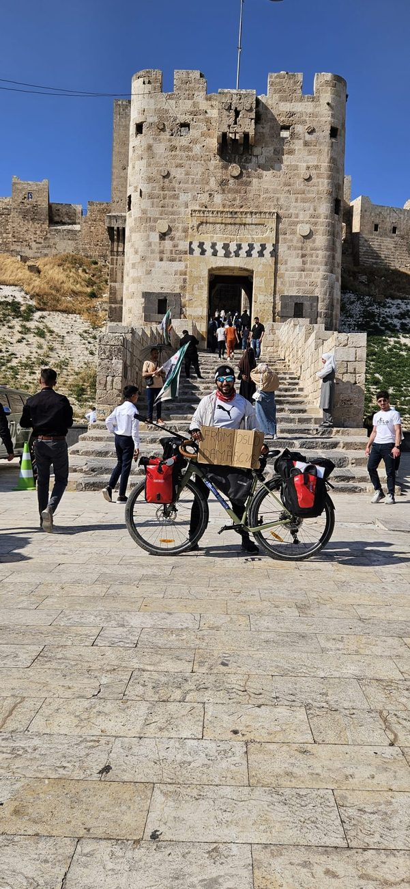
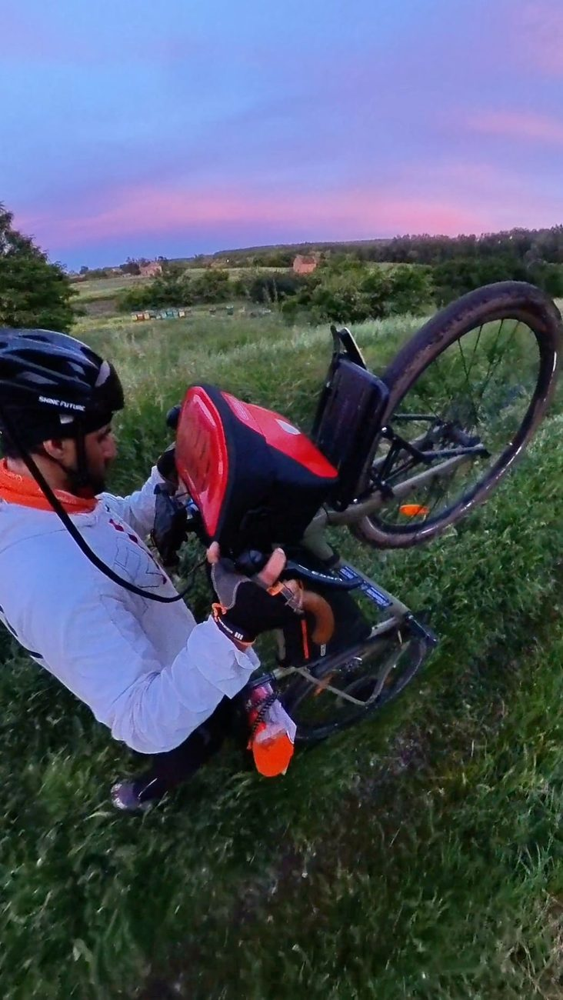
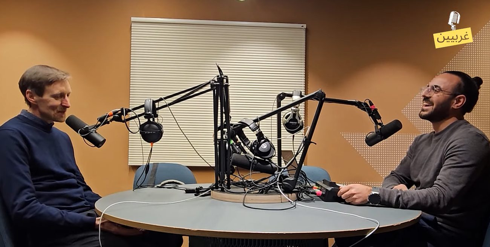
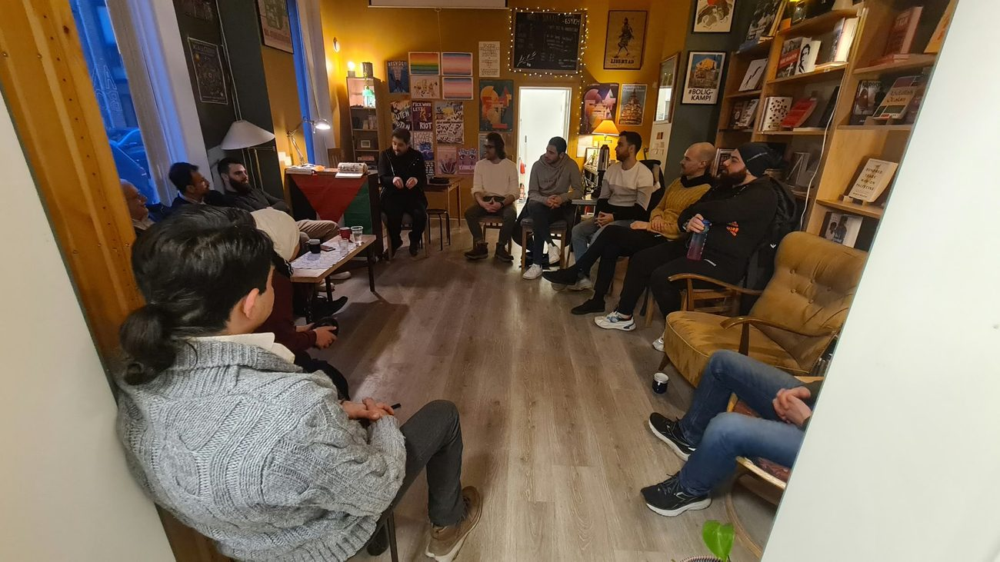

Professional
Complex projects, Agile delivery, quality and stakeholder alignment.
Consultant · Project leader · Storyteller
I connect business needs, technology and people. My work spans digital delivery in Norway, public dialogue, community leadership and a 5,000-kilometre journey from Oslo to Damascus.

The portfolio
A personal portfolio should show more than job titles. This one brings together the structured consultant, the community builder and the storyteller.
Complex projects, Agile delivery, quality and stakeholder alignment.
Dialogue, volunteer leadership and spaces where people can participate.
Podcasts, media and public projects that make experience visible.
Professional work
Selected assignments across public services, insurance, mobility and technology.
Risk-based test leadership, coordination and traceable execution in a legally complex, mission-critical programme.
Structured quality assurance across frontend, backend, interfaces and automation in the insurance domain.
Facilitated a multidisciplinary team and helped shape a decision basis for connected-car services.
Designed and developed an accessible React and TypeScript interface in a cross-functional team.
Signature project
From Oslo to Damascus by bicycle, turning a personal return journey into public storytelling and support for education.

The road became a platform for endurance, partnership-building, fundraising and real-time storytelling.
Visit Cycling4Hope ↗

Creative work
Research-led conversations and public initiatives across language, geography and experience.

Arabic-language conversations with researchers and specialists working on the Middle East.
Open the channel ↗
Creating structured spaces for listening, trust and democratic conversation.

Public speaking, facilitation, volunteer leadership and community events.
Education & credentials
University of Oslo
University of Oslo
Community
Co-founding a student association, leading volunteers and facilitating dialogue taught me how to create belonging and turn an idea into something others want to join.

Let’s connect
I am interested in meaningful work where technology, delivery, communication and social impact meet.